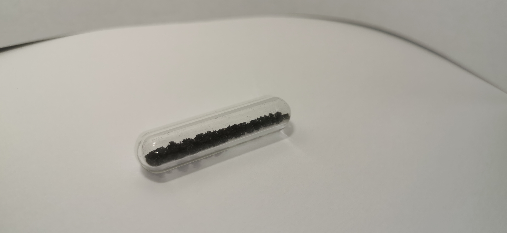
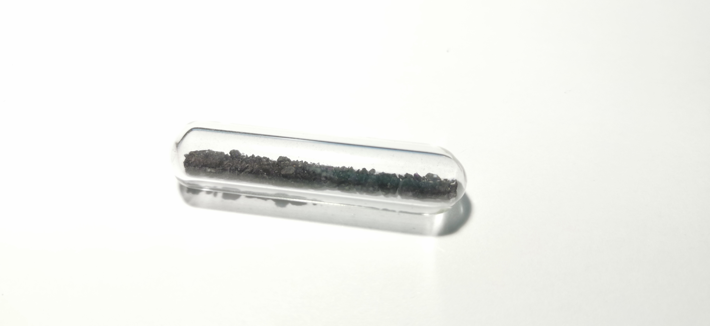

氟
2019.8 呕吐石  
呕吐石：呕吐石在其他场合并不常见，百度百科没有解释，维基百科上解释也较少。根据收藏圈普遍的说法：呕吐石是一种含放射性的萤石矿物（铀取代部分钙），通过射线的电离作用，会有一定量稳定的游离氟产生，是自然界几乎唯一的游离氟获取地点。靠近闻呕吐石，可以闻到氟气氧化氧气生成的臭氧味道。
状态：我的这管呕吐石样品是碎块状的，是我在元素交流群中偶然看到的出售广告，不过很不幸该商家所售的稍大块样品在我询问的时候已经售罄，因此我对着这管样品实际上不是很满意。国内呕吐石收藏的风波应该从大叔披露NovaElements出售假氟气开始：由于氟气在有水环境下很容易腐蚀玻璃，而且尽管在无水情况下反应也不是很缓慢，因此单纯的玻封氟气也需要量大于氟气本身的稀有气体保护；尽管如此，过数年后氟气仍然会扩散尽。大叔在贴吧放出了自己为了寻找氟气收藏的经历，指出呕吐石是一个很好的选择，并也接受呕吐石的代购。我曾经询问过大叔，但是大叔本人在国外，将样品发往国内十分麻烦，告诉我需要等他回国，需要四五个月，我囿于懒放弃了打算，但现在还是很后悔的。
大叔原帖：https://tieba.baidu.com/p/5661689009?pid=119314611438